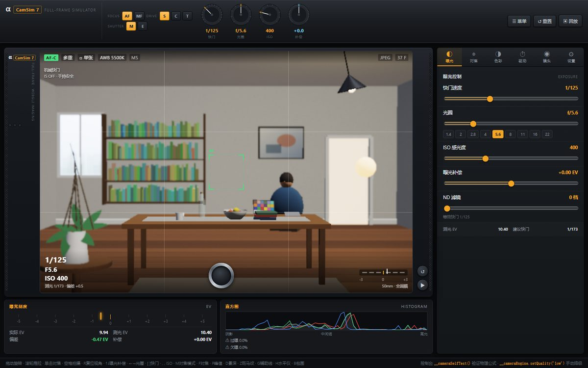

① 顶部转盘区
快门、光圈、ISO、曝光补偿四个读数，加上 AF/MF、驱动、快门类型三个开关。相当于相机肩屏，扫一眼就知道现在什么状态。
练习台 · 相机模拟器
PRACTICE BENCH · CAMERA SIMULATOR
CamSim 是一个在浏览器里跑的真实相机物理模拟器：光圈、快门、ISO、对焦距离、白平衡与镜头焦段都能真拨，取景器、直方图和曝光刻度会立刻给出结果。
它是独立站点，拾影这里只做介绍和入口，不把它塞进这一页。先花三分钟认认路：哪个区域管什么，心里有数了，再点进去随便拨。
下面这张是模拟器的实际界面。真正的操作在另一个标签页里进行——它是一个独立的网页应用，拾影这里只负责介绍与入口。

在新标签页打开模拟器 ↗ 它会在自己的页面里运行，用电脑全屏打开体验最好。
它照着一台真实相机的操作逻辑摆的。从上到下、从左到右认一遍，进去就不会找不着北。
STEP 01
中间的大画面就是取景器，里头是一个室内场景：书柜、窗户、灯、一个人。左侧那片光来自窗户，右侧那盏是暖光灯——同一画面里同时有冷光和暖光，后面练白平衡时很有用。
拖动可以旋转视角，滚轮推拉机位，单击画面即对焦。
STEP 02
从左到右分别是快门 1/125、光圈 f/5.6、ISO 400、曝光补偿 +0.0。左边两个开关是 AF/MF（自动/手动对焦）和驱动模式（S 单张、C 连拍、T 定时），SHUTTER 的 M/E 则是机械快门与电子快门。
它们和右侧面板里的滑块是同一组参数，改哪边都行。
STEP 03
一是画面亮度，二是左下的 曝光刻度（指针在 0 附近说明曝光正常），三是右下的直方图（左边堆太满就欠曝，右边贴边就过曝）。三个反馈一起看，比只凭眼睛判断靠谱得多。
想练「白加黑减」，就对着白墙和深色桌面试同一组参数，看刻度和直方图怎么跑偏。
STEP 04
曝光、对焦、色彩、驱动、镜头、设置——每页只管一类事。想练虚化就去「镜头」换长焦、再去「曝光」开大光圈；想练景深就看「对焦」页给出的景深范围与超焦距；想练色温就切到「色彩」页换白平衡。
「设置」页还能调布光强度和运动速度，把静态场景改成会动、会变的现场。
六个区块各管一段，先记住位置，再记细节。
快门、光圈、ISO、曝光补偿四个读数，加上 AF/MF、驱动、快门类型三个开关。相当于相机肩屏，扫一眼就知道现在什么状态。
实时渲染的画面，带对焦点框与构图辅助。左下角叠加当前参数，右下角是小型曝光尺，顶上还有拍摄信息条（对焦模式、白平衡、文件格式、剩余张数）。
六个标签页：曝光 / 对焦 / 色彩 / 驱动 / 镜头 / 设置。滑块与档位按钮并存，档位按钮点一下就跳到标准档，滑块适合连续调节。
刻度显示「实际 EV / 测光 EV / 偏差」，直方图分阴影、中间调、高光三段，还标出过曝与欠曝的百分比——比相机上的直方图更细。
菜单、重置、回放。回放能翻看刚拍的照片，用来对照「当时设了什么、拍出来什么样」，是复盘习惯的起点。
常驻在页面最底一行，忘了键位就低头看一眼。键盘操作熟练之后，练习速度会明显变快。
每条都对应《拾影》里的一节。做完再回去读书，会发现自己不再是「看懂了字」，而是「知道为什么」。
01同一场景，只动快门
固定光圈 f/5.6、ISO 400，把快门从 1/1000 一路拨到 1/15，看画面怎么变亮、人的动作怎么开始拖影。
02用光圈切出浅景深
把焦距拉到 85mm 以上，光圈开 f/1.4 对焦在人脸；再收到 f/11 拍同一构图，对比背景的虚化差多少。
03找到这台机器的安全快门
拉到 200mm，把快门逐档放慢，直到画面明显发虚。记下这个数值，再看「对焦」页给出的安全快门是多少。
04把 ISO 推到极限
在暗处固定快门与光圈，把 ISO 从 100 推到最高，放大看暗部噪点与细节怎么被吃掉。
05验证「白加黑减」
对着白墙拍一张、对着深色桌面拍一张，都让刻度停在 0。回放对比：白墙是不是发灰、深色桌面是不是发亮？然后把补偿改成 +1 和 −1 各拍一张。
06用直方图判断而不是用眼睛
故意过曝两档、欠曝两档各拍一张，观察直方图两端堆积与「过曝 / 欠曝百分比」的读数，再回到正常曝光对比。
07同一画面，三种白平衡
画面里同时有窗外的冷光和室内的暖灯。分别用日光、白炽、自定义色温各拍一张，看哪一张「白」得最接近眼睛看到的样子。
08换镜头看视角变化
机位不动，只把镜头从 14-35mm 换到 70-200mm，同一位置同一主体，看背景被推远还是被拉近、脸型有没有变形。
鼠标能做的事键盘都能做，熟练之后练习效率更高。以下与模拟器底部提示一致。
| 按键 | 作用 | 按键 | 作用 |
|---|---|---|---|
| 空格 | 拍摄 | R | 复位视角 |
| ↑ ↓ | 曝光补偿 ± | ← → | 光圈 收 / 放 |
| [ ] | 快门 慢 / 快 | , . | ISO 降 / 升 |
| M | 切换 AF / MF | F | 触发对焦 |
| P | 对焦峰值 | D | 景深预览 |
| Z | 斑马纹 | G | 构图辅助线 |
| H | 水平仪 | B | 包围曝光 |
还有两条面向好奇者的控制台命令：__cameraSelfTest() 会跑一遍物理公式自检，__cameraEngine.setQuality('low') 可手动降画质——机器吃力时再用。
它是模拟器，不是真机。传感器噪点、镜头像差、机身抖动都被简化成了可控的公式，用来练「因果关系」很合适，但真实器材的手感与色彩仍需实拍积累。
窄屏体验会打折。界面按桌面键盘设计，手机上能打开但不方便拨参数。手机建议横屏并全屏打开。
别把它当考试。参数没有唯一正确答案，重要的是你能说出「我为什么这样设」——这正是《拾影》第三章到第四章想练的判断力。